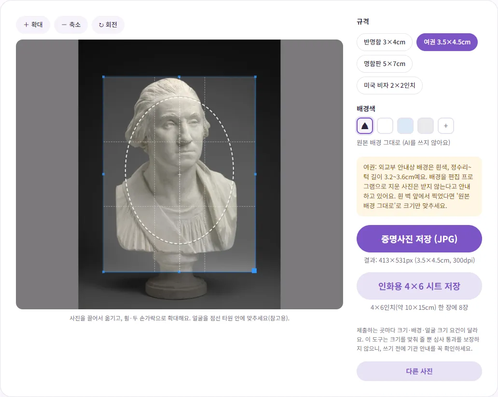
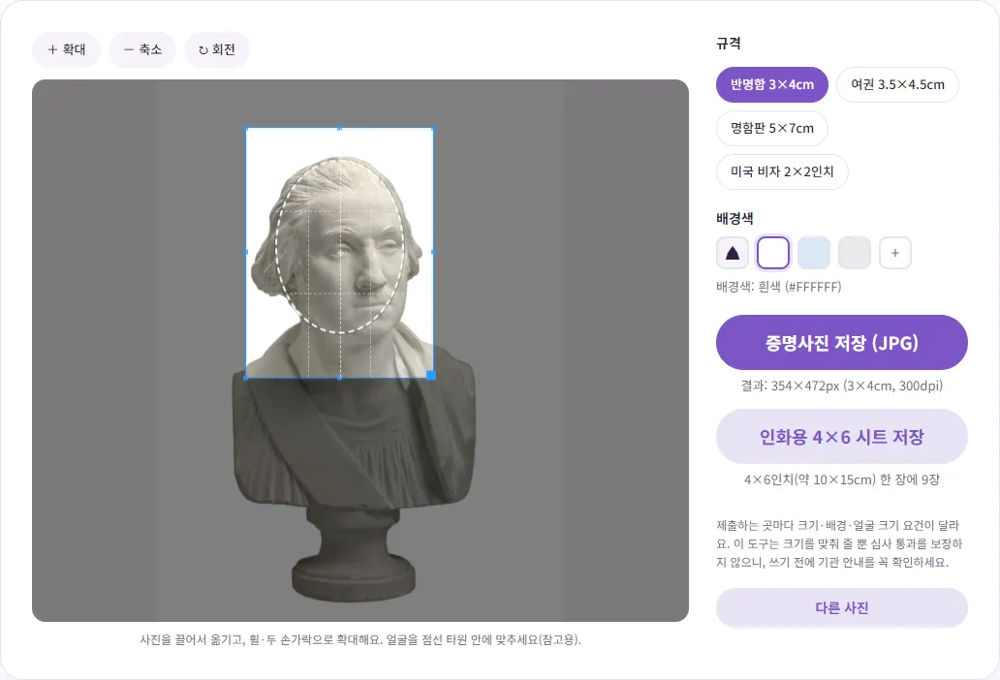
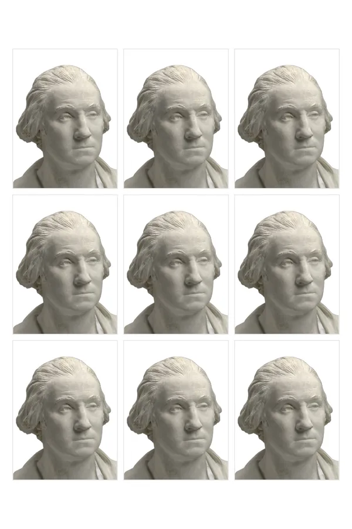

이력서 증명사진, 규격은 뭘로 하고 집에서는 어떻게 만들까요?
지원서 마감은 코앞인데 사진관 갈 시간이 없거나, 몇 년 전 찍은 사진을 또 쓰기가 망설여지시죠? 이 글에서는 이력서에 흔히 쓰는 증명사진 규격부터, 집에서 사진을 잘 찍는 요령, 규격에 맞춰 자르고 인화용 파일과 온라인 접수용 파일까지 만드는 과정을 직접 해 본 그대로 알려 드릴게요.
이력서 증명사진, 정해진 규격이 있을까요?
이력서나 입사지원서에는 보통 '반명함판'이라고 부르는 가로 3cm × 세로 4cm 사진을 많이 써요. 다만 이건 사진관과 채용 양식에서 오래 써 와서 굳어진 크기이고, 법령이나 공식 고시로 정해진 이력서 사진 규격은 찾지 못했어요. 회사마다 양식이 다르고, 온라인 지원서는 사진 칸 크기나 용량을 따로 정해 두는 경우도 많아요. 그래서 가장 먼저 볼 것은 언제나 채용 공고와 지원 양식의 안내예요.
자주 보이는 크기를 정리하면 이래요. 픽셀 수는 인쇄할 때 흔히 쓰는 300dpi(1인치에 점 300개) 기준으로 계산한 값이에요.
| 이름 | 실제 크기 | 300dpi 기준 픽셀 | 주로 쓰는 곳 |
|---|---|---|---|
| 반명함판 | 3 × 4cm | 354 × 472 | 이력서, 입사지원서, 각종 원서 (업계 통용 크기) |
| 여권용 | 3.5 × 4.5cm | 413 × 531 | 여권 (외교부 규격), 이 크기를 요구하는 일부 원서 |
| 명함판 | 5 × 7cm | 591 × 827 | 일부 서류, 사원증 등 (업계 통용 크기) |
여권용 3.5 × 4.5cm는 외교부가 공식으로 정한 규격이고, 온라인 신청용 파일은 413 × 531 픽셀을 권장한다고 외교부 여권안내 누리집에 나와 있어요. 나머지는 통용되는 크기라서 제출처가 다른 숫자를 요구하면 그쪽을 따르면 돼요.
여권·비자 사진은 집에서 만들 때 특히 조심하세요
이력서와 달리 여권 사진은 기준이 아주 구체적이에요. 외교부 여권안내 누리집의 '여권사진 규격 안내'에는 이런 내용이 있어요.
- 크기는 가로 3.5cm × 세로 4.5cm, 정수리(머리카락 제외)부터 턱까지 머리 길이가 3.2~3.6cm여야 해요.
- 배경은 균일한 흰색이어야 하고, 사진 편집 프로그램으로 배경을 지우거나 흰 배경에 인물을 합성한 사진은 제출할 수 없어요.
- 사진 편집 프로그램이나 필터로 임의로 보정한 사진(AI를 활용한 편집·합성 포함)은 허용되지 않아요.
- 본인이 직접 찍은 사진은 규격에 맞는 경우에만 쓸 수 있고, 온라인용 사진파일 안내에서는 휴대폰 등 모바일 기기로 찍은 사진을 권장하지 않는다고 밝히고 있어요.
정리하면, 집에서 찍은 사진의 배경을 AI로 하얗게 바꿔서 여권에 쓰는 건 반려될 수 있어요. 여권은 사진관에서 찍는 걸 권해요. 꼭 직접 찍어야 한다면 실제 흰 벽 앞에서 찍고, 배경은 손대지 않은 채 크기만 맞추세요. 벤토툴 증명사진 만들기에서 여권 규격을 고르면 이 주의 문구가 함께 뜨고, '원본 배경 그대로'를 고르면 AI를 쓰지 않고 자르기만 해요. 비자 사진도 나라마다 편집 사진을 받지 않는 경우가 있으니 해당 대사관 안내를 꼭 확인하세요.

집에서 증명사진 잘 찍는 요령
이력서용이라면 집에서도 충분히 깔끔하게 찍을 수 있어요. 결과를 가장 크게 좌우하는 건 휴대폰 성능보다 빛과 배경이에요.
빛: 낮의 창가, 창을 마주 보고
해가 밝은 낮에 창문을 바라보고 서면 얼굴 전체에 빛이 고르게 들어와요. 햇빛이 직접 얼굴에 꽂히면 그림자가 진하게 생기니 얇은 커튼으로 한 번 걸러 주면 좋아요. 천장 조명만 켜고 찍으면 눈 밑과 코 아래에 그림자가 지기 쉬워요.
배경: 밝은 단색 벽에서 한두 걸음 떨어져서
흰색이나 밝은 회색 벽이 가장 좋아요. 벽에 바짝 붙어 서면 뒤쪽 벽에 내 그림자가 생기니, 벽에서 한두 걸음 앞으로 나와 서세요. 옷은 배경과 다른 색을 입어야 경계가 또렷해요. 흰 벽 앞에 흰 셔츠를 입으면 어깨선이 배경에 묻혀 버려요.
카메라: 눈높이에, 조금 떨어져서
카메라는 눈과 같은 높이에 두고 정면을 보세요. 아래에서 찍으면 턱이, 위에서 찍으면 이마가 커 보여요. 팔을 뻗어 셀카로 가까이 찍으면 코가 커 보이고 귀가 덜 보이게 왜곡되기 쉬운데, 외교부 여권 사진 안내에도 근접 촬영으로 실물과 다르게 보이는 사진을 반려 예로 들고 있어요. 휴대폰을 선반이나 삼각대에 올리고 1m 이상 떨어진 뒤 타이머로 찍거나, 다른 사람에게 부탁하는 게 좋아요. 위아래 여백은 나중에 자르면 되니 어깨까지 넉넉하게 나오게 찍으세요.
마무리: 여러 장 찍고 고르기
입은 다물고 표정은 편하게, 머리카락이 눈썹과 얼굴 윤곽을 가리지 않게 정리하세요. 안경을 쓴다면 렌즈에 빛이 반사되지 않는지 확인하고, 열 장 정도 찍어서 가장 자연스러운 한 장을 고르면 실패가 적어요.
벤토툴로 규격에 맞게 자르고 배경 바꾸기
- 증명사진 만들기를 열고 찍은 사진을 올리세요.
- 오른쪽에서 규격을 고르세요. 이력서라면 '반명함 3×4cm'가 기본으로 선택돼 있어요.
- 배경색을 고르세요. 흰색·연파랑·연회색 중 하나를 고르면 AI가 배경을 지우고 그 색으로 채워요. 벽이 이미 깨끗하다면 '원본 배경 그대로'를 골라도 돼요.
- 사진을 끌어서 옮기고 확대·축소해서 얼굴이 점선 타원 안에 들어오게 맞추세요. 타원은 얼굴 크기를 가늠하는 참고선이에요.
- '증명사진 저장 (JPG)'을 누르면 한 장짜리 파일이, '인화용 4×6 시트 저장'을 누르면 인화용 파일이 내려와요.

직접 해 보니 처음 한 번은 배경을 지우는 AI 모델(약 40MB)을 내려받느라 사진을 올리고 결과가 나오기까지 25초 정도 걸렸어요. 모든 처리는 내 브라우저 안에서 이뤄져서 얼굴 사진이 서버로 올라가지 않아요. 배경만 지운 투명한 사진이 따로 필요하다면 배경 제거를 쓰면 돼요.
AI 배경 지우기는 머리카락 끝처럼 가는 부분에서 완벽하지 않을 수 있어요. 저장하기 전에 화면을 확대해서 머리 둘레가 어색하게 잘리지 않았는지 꼭 보세요. 어색하다면 더 밝고 단순한 벽 앞에서 다시 찍는 게 보정보다 빨라요.
사진관 인화용 4×6 시트 활용하기
종이 이력서에 붙이거나 원서에 붙일 실물 사진이 필요하면 '인화용 4×6 시트'를 저장하세요. 4×6인치(약 10×15cm) 인화지 한 장 크기의 파일에 같은 사진이 여러 장 배치돼요. 반명함은 한 장에 9장, 여권 규격은 8장이 들어가고, 파일은 300dpi 기준으로 만들어져 실제 크기로 인화돼요. 저장된 파일은 1200×1800 픽셀이었어요.

이 파일을 사진관이나 인화 앱에 4×6(4R) 크기로 맡기면 돼요. 이때 인화 옵션에 '꽉 채우기'나 '자동 자르기' 같은 항목이 있다면 꺼 두세요. 파일 가장자리가 잘리거나 늘어나면 사진 크기가 3×4cm에서 어긋날 수 있어요. 받은 뒤에는 회색 선을 따라 자르면 돼요.
온라인 지원서에 올릴 파일 준비하기
온라인 지원서는 인화 대신 파일을 올려요. '증명사진 저장 (JPG)'으로 받은 반명함 파일은 354×472 픽셀이고, 테스트에서 용량은 41,344바이트(약 41KB)였어요. 대부분의 용량 조건은 이걸로 통과하지만, 사이트가 더 작은 용량을 요구하거나 HEIC 원본을 바로 올려야 하는 상황이라면 사진 용량 KB 맞추기로 목표 용량에 맞추세요. 반대로 사이트가 특정 픽셀 크기를 요구하면 이미지 크기 조절로 먼저 크기를 맞춘 뒤 용량을 줄이면 돼요. 자세한 순서는 '사진은 ○○KB 이하' 오류 해결법에 정리해 두었어요.
마지막으로, 이 도구는 크기와 배경을 맞춰 줄 뿐 심사 통과를 보장하지는 않아요. 제출처마다 얼굴 크기, 배경색, 촬영 시기 같은 요건이 다를 수 있으니 올리기 전에 공고문을 한 번 더 확인하세요.